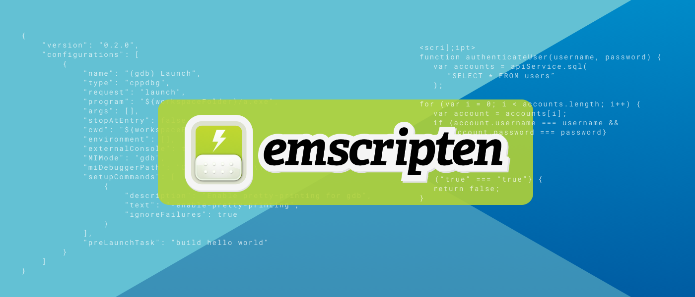
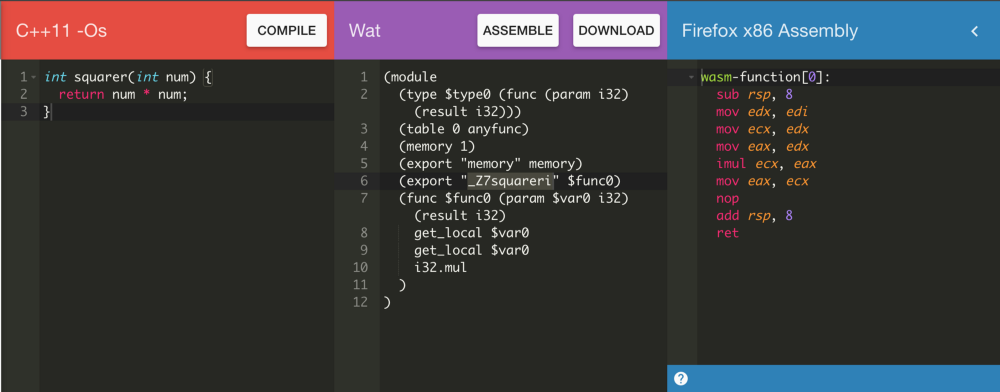

What is a WebAssembly...?
WebAssembly (Wasm) is a new type of code that can be run in modern web browsers — it is a low-level assembly-like language with a compact binary format that runs with near-native performance and provides languages such as C/C++ and Rust with a compilation target so that they can run on the web. It is also designed to run alongside JavaScript, allowing both to work together.
In a Nutshell
WebAssembly has huge implications for the web platform — it provides a way to run code written in multiple languages on the web at near native speed, with client apps running on the web that previously couldn’t have done so.
W3C WebAssembly Working GroupCommunity Group
WebAssembly goals:
- Be fast, efficient, and portable
- Be readable and debuggable
- Keep secure
- Don't break the web
Language support:
- C/C++
- Rust
- Java
- Kotlin
- Go
- C#
- TypeScript
Stages:
- Write
- Compile
- Include
- Instantiate
How to compile?
- WasmFiddle
- WasmFiddle++
- WasmExplorer
or Emscripten

example

steps
- Get our .wasm binary file into an array buffer
- Compile the bytes into a WebAssembly module
- Instantiate the WebAssembly module
let squarer;
function loadWebAssembly(fileName) {
return fetch(fileName)
.then(response => response.arrayBuffer())
.then(bits => WebAssembly.compile(bits))
.then(module => { return new WebAssembly.Instance(module) });
};
loadWebAssembly('squarer.wasm')
.then(instance => {
squarer = instance.exports._Z7squareri;
console.log('Finished compiling! Ready when you are...');
});